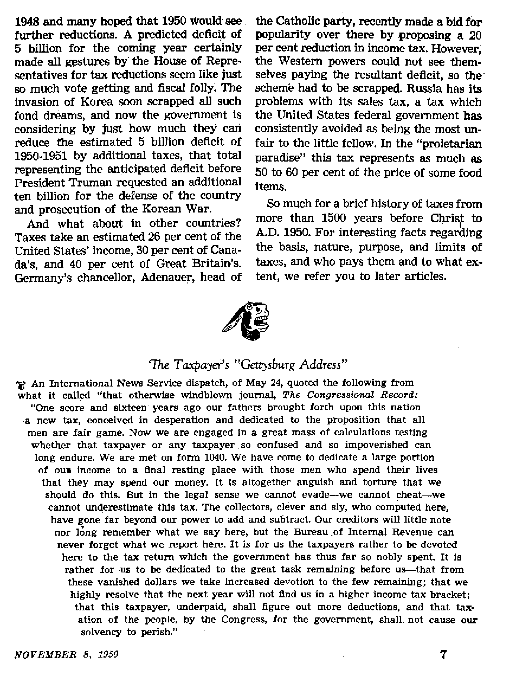
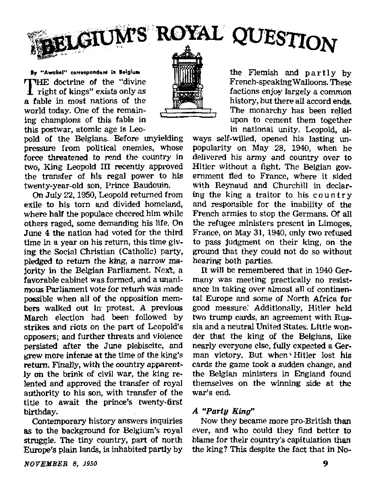
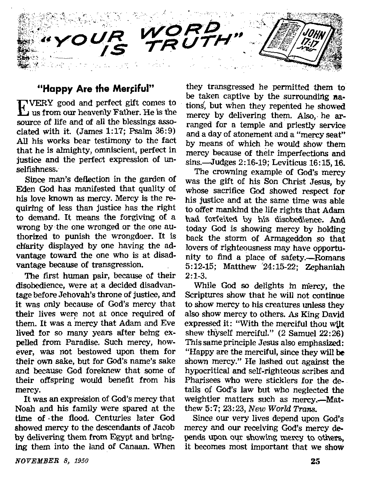
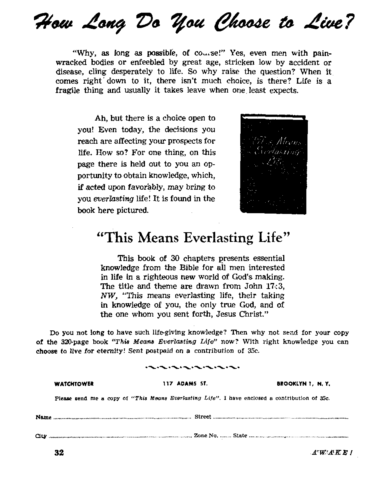

THE STORY OF TAXATION
3,500 years of man’s experience. with taxes -----------.. -,££*• .*_•>..........
Belgium’s Royal Question
Opposition. to Leopold sarina Hs capitulation to Hitler v. H ww ■:
War for Survival Between Man and Insects?
Appreciate their beneficial acL 'Sc declaring total war .... ..........»*.•> -nf?' .......
"Happy Are the Merciful”

THE MISSION OF THIS JOURNAL
News sources that are able to keep you awake to the vital issues of our times must be unfettered by censorship and selfish interests^ “Awake!” has no fetters. It recognizes facts, faces facts, is free to publish facts. It is not bound by political ambitions or obligations; it is unhampered by advertisers whose toes must not be trodden on; it is unprejudiced by traditional creeds. This journal keeps itself■ free that it may speak freely to you. But it does not abuse its freedom- It maintains integrity to truth.
“Awake !’* uses the regular news channels, but is not dependent on them. Its own correspondents are on all continents, in scores of nations. From the four corners of the earth their uncensored, on -th&~ scenes reports come to you through these columns. This journal's viewpoint is not narrow, but is into relational. It is read in many nations, in many languages, by persons of all ages. Through its pages many fields of knowledge pass in review—government, commerce, religion, history, geography, science, social conditions, natural wonders—why, its coverage is as broad as the earth and as high as the heavens.
“Awake!** pledges itself to righteous principles, to exposing hidden foes and subtle dangers, to championing freedom for all, to comforting mourners and strengthening those disheartened by the failures of a delinquent world, reflecting sure hope for the establishment of a righteous New World,
Get acquainted with “Awake!11 Keep awake by reading “Awake!”
Pl'RMHHED Sew fHOXTBfJ L1V watchtower bible and tract society, inc.
117 Adams Street
N, H, Knqrh, President
Printing this Issue: 810,000
Brooklyn 1, N. Y„ U. S, A, Grant Suites, Secreftirj/
Five cents a copy
Linflaipw in which thii mtfluino U ortfhhurf; Htmlnioiitbly—English, German, a parish, Monthly— Afrikaans, Danish, French, Greek. Portuguese, Swedish, UkralnLuri.
Offices Yearly Subscription liaLe
America, U.S,. 117 Adams St,, Brouklyn 1, N.Y. $1
Australia. II Ber^rnrd Rd., StrsthhrJrJ. N.9.W. 8s
Canada, 40 Irwin Avf.. Toronto S. Qnlarliy $1
CYa*cn Terrace, l.onrtnn, W. 2 5s South Africa, tiij Ruston Hmte. Choc Town 5s
ItonVttmrces tiwM hw aent to office Irt j'tuf cour Uy In coltipllntlcv wirti rBgulatianj to guarantee safe rlellrery of iitum-y. Remlttafinas irv accepted at Brooklyn from cuim tries where no office Is located, by inLematiiunal money order only, Subscription rates in different r rum tries are here r Uteri in local currency. Notice tf expiration (with renewal blank) is sent at least two issues before nirterriptlon expires. Chariot of gddrrss when 1o our offirti tn*y hv exyic«et) effect he nJchh one jTtonlii, Wentf ypur old an well aj new addreai.
Entered as acini’class matter at Brooklyn,
N, Y.. Act of March 3. 1879.
Printed In U. H. A.
CONTENTS
Roman Tax Collectors- the Publicans
The Taxpayer’s “Gettysburg Address”
Tax Experiments of Bygone Days
News Reports of
Improper to Marry?—Ask Panama 17 War for Survival
“Your Word Is Truth’’
Brooklyn, N, Y,,t November 8. 1950
___Nu/nber gl
Votuma XXXI
3,500 Years of Man's Experience with Taxes
TAXES concern themselves with the distribution of the burden of government And since no one likes to bear burdens it is not surprising that the very thought of taxes causes resentment to arise in the minds of most people. Nor is that resentment lessened by the more or less vague realization that the tax burden is higher than it needs to be and that it is not justly distributed.
In the main, this story of taxation is one of injustice and oppression, Tracing its history we find that taxes not only affected the economic life of the peoples, but time and again they became the all-important political issue. Wars were fought, governments rose and fell, and more than one ruler lost his life, all because of the unpopularity of certain taxes.
Among the most ancient records telling of taxes are paintings on tombs which show the Egyptians, of some 3,500 years ago, paying taxes in the form of metal wares. An ancient Egyptian papyrus records taxes paid by the nobility and landowners, the national income derived from public works, and the tithes received from the common people some 3,000 years ago. The twenty per cent of the crops that Joseph collected for Pharaoh during the seven years of plenty may be considered as done in the form of a tax.
To what extent the nation of Israel paid taxes, aside from the tithes and offerings they paid to the Levites, from the time they left Egypt until the days of Judge Samuel, the Bible record does not reveal. However, when they asked for a king, God, through Samuel, warned them that, among other things, a human king would prove to be a great tax burden to them: he would take ten per cent of their seed, of their sheep and of the product of their vineyards. Also, he would conscript their sons and daughters for service in his palace, etc, —1 Samuel 8:11-18,
At the time of the death of King Solomon this tax burden seemed to have become too heavy to be borne. The people sent emissaries to his son, King Rehoboam, imploring him to reduce their taxes, assuring him that if this were done they would serve him even as they had served his father, King Solomon. Instead of listening to their pleas, Rehoboam increased their burdens, pursuing a harsh tax policy, for which he paid dearly, even as many rulers since his time have done. The people rebelled and he lost ten of the twelve tribes. When he sought to force collection of taxes, his head collector was stoned to death and he himself had to flee for his life.—1 Kings 12:1-18.
But this rebellion and secession failed to solve the tax worries of the ten tribes. Not only must their continual waning with the two-tribe kingdom have involved a neavy tax burden but before long they were payiAg tribute to Gentile nations round about them. Clay tablets, as well as the Scriptural record, tell of such kings as Jehu and Menahem paying tribute to the kings of Assyria. (2 Kings 15:20) After an unhappy existence for some 250 years, that nation, conceived in a protest against high taxes, came to its end. Its sister nation, the two*tribe kingdom of Judah, before jts final end in the year 607 B.C., was also paying tribute to Gentile nations round about, first to Egypt and then to Babylon.—2 Kings 23:35; 24:1.
The Persian “Publicanus”
Although after Medo-Persia conquered Babylon the Jews were allowed to return to their homeland (in 537 B.C.), they were still required to pay such taxes to Gentile rulers. (Nehemiah 9:36,37) In those days the Persian empire required each satrap, or local ruler of a province, to collect a certain amount of revenue, placing him thereby in the position of publicanus, or farmer of revenue.1 Many were the taxes and abuses under this system, people often being sold into slavery because of their inability to pay the tax.
But the Persian monarchs could be generous when they so chose. Artaxerxes, for instance, took such an interest in the restoring of true worship in Jerusalem that he exempted from taxes all who had anything to do with the temple service there. Nor would we overlook Nehemiah’s generosity. Rather than to still further burden his brethren, the Jews, who were groaning under the empire tax, with the tax for the ipkeep of the local government, as previous governors had done, he bore all the expenses himself. This, among other things, involved the feeding of more than 150 men daily.—Nehemiah 5:4,14-18.
Heavy as was the Persian yoke, the tex burden of the Syrians and Egyptians was still harder to bear. These governments had the custom of selling the tax of a certain land to the highest bidder, who then made sure that he got back not only his original investment but much more. At times such a tax collector would demand as much as half of the farmer’s fruit yield and one-third of his grain as taxes.
Roman Tax Collectors—the Publicans
Coming down to the time when Jesus was on the earth, the Jews were in bondage to the Romans, whose government exacted tribute by means of tax collectors stationed at the harbors, piers and at the gates of the cities. The Roman “farmers of revenue” were known as pubhcani. These constituted a society of knights and occupied a most enviable position in the Roman empire, halfway between the senators and freemen. Often these knights would form corporations for the purpose of taking over the contract to gather taxes from a certain land or province and then would share the profits. Tax collecting was big business in Rome in those days!
Working under the publicani, or knights, were the “chief of the publicans”, of whom Zacchaeus, mentioned, in the Bible, seems to have been one. (See Luke 19:2-10.) Beneath these came the lowly publicans, such as Matthew Levi, who later became one of the twelve apostles. (Matthew 9:9) And though the whole Roman tax structure was honeycombed with corruption, injustice and oppression, it was- these lowly publicans who were the most hated and despised, as it was they who came directly in contact with the people and served in the most apparent way as oppressors of the people. In the Bible we find them linked with sinners and harlots.
The emphasis that Rome placed on tax collecting has caused some historians to observe that she conquered lands not so much for glory as for revenue. As a country or province was conquered the governors and tax collectors took over, squeezing the people for all they coulfi get out of them. As a result money flowed into Rome on every hand. Roman citizens built themselves fine houses, with beautiful statues, costly paintings and furnishings, and decked themselves with garments of silk and gold.
But Rome's tax paradise was not to last The law of retribution, which inexorably penalizes all excess, was soon to catch up with Rome. The peoples of the provinces were unable to pay the exorbitant taxes; so much so that at one time the emperor found it necessary to cancel all land taxes that were eleven years overdue, only to couple it with an-increase on land taxes for the fqture. As a result people left their farms and crowded into the cities. This factor, together with the luxury, vice and idleness of the ruling classes in the cities, started the empire on the road of race suicide which was to cause its decline and eventually sea] its doom. Before its end the publicans had become so unpopular that evildoers were penalized by being made tax collectors.
As apostate Christianity made itself felt in Rome the clergy began to obtain favors from the secular government, among which was freedom from tax on income. History also records that in the 6th century the African provinces complained about the high taxes of Justinian. And no wonder they were high—only one-third of them ever reached Rome’. A few centuries later Italy rebelled against the Byzantine rule; high taxes were among the grievances.
In the 11th century William the Conqueror made tax history by being the first one to take a complete census of his country's wealth. He had agents go through the length and breadth of the land, listing all the farms, number of serfs, down to the last cow and pig, as well as listing all other sources of income and what was due the king. This record was called the “Domesday Book”, it being held that it was as impossible to get relief from its taxes as it was to escape doomsday.
In England, in the 13th century, the high and arbitrary taxes of King John were in large measure responsible for the uprising of the nobles, which resulted in the signing of the Magna Charts, in 1215, In 1251 the king of Denmark died in a campaign against an uprising of Frisian peasants who refused to pay a new tax known as the “Blood Penny Tax”. The clergy in both England and France complained bitterly about papal taxes. In fact, all during the Middle Ages the people groaned under the twofold tax, to the state and to the church. The latter tax was made especially heavy when two or three popes claimed to be the vicar of Christ at the same time and each insisted on all the pomp and splendor that went with that office!
In the following century the English government tried to levy a new tax, the poll tax. This tax was to be paid by each adult regardless of income, exempting only absolute paupers.' This tax, together with the unjust and arbitrary manner in which it was imposed, started a revolution by the peasants, who stormed London and killed the archbishop of Canterbury together with other high officials before they were pekcified by promises of relief and freedom from reprisals. Although the promises in the main were not kept, that did mark the end of the poll tax as far as medieval England was concerned.
In 1649 Charles I of England was beheaded, the climax of a rebellion largely caused by his having levied taxes for eleven years without consulting Parliament About the same time England began to adopt an arbitrary and restrictive fiscal policy regarding the American colonies which stirred up deep resentment. This soon revolved around the issue of “No taxation without representation", This policy of England reached its climax in the Stamp Act, which aroused such violent opposition that it was soon repealed.
England was determined, however, to keep its tax hold on the colonies, not so much for the revenue as for the principle of the thing. So she passed other measures which involved very little burden and which tried to sugar-coat the issue. But the colonists were sensitive, they were not taken in by any such subterfuge. Typical of the way they felt about this last maneuver was the “Boston Tea Party", December 16, 1773, in which some 50 local citizens, disguised as Indians, boarded an English ship and tossed its entire cargo of 340 chests of tea, on which duty was involved, into the sea. Among a number of reprisal measures by England was the closing of the port of Boston until the owners of the tea were indemnified. This touched off a series of events which led to the Revolutionary War, the Declaration of Independence and the birth of the United States.
In 1794 occurred the “Whisky Rebellion", in which Pennsylvania fanners tarred and feathered federal collectors of the whisky tax even though it was but from 7 to 18 cents a gallon. (In 1950 this tax is nine dollars per gallon.) This lawlessness reached such proportions that Washington was oongea to Taise an army oi 15,000 to quell the rebellion against the whisky tax.
The whisky tax was repealed in 1802, and for the next century tariff on imports supplied nearly all the money needed to run the federal government. The Civil War caused an income tax to be imposed, and that war and the Spanish-American War of 1898 also brought with them temporary taxes on inheritances. An income tax law was passed in 1894, only to have it declared unconstitutional in 1895.
The Sixteenth Amendment, passed in 1913, provided that “The Congress shall have the power to lay and collect taxes on incomes from whatever source derived, without apportionment among the several states, and without regard to any census or enumeration”. The early part of the twentieth century also saw estate and corporation taxes become a permanent fixture of the United States fiscal policy. As World War I and its profiteering sent expenses to new all-time highs, the government also boosted taxes, taking 77 per cent of all incomes over a million dollars and 80 per cent of war profits of corporations.
With the end of World War I taxes were lowered until the depression and the New Deal effort to lick it caused taxes- to be increased. And as Pearl Harbor made the United States an active participant in World War If new taxes were added as well as old ones raised all along the line. The income tax, which before the war affected only four million, in 1939, now concerns 47,000,000. And though the war ended 5 years ago, the 1949-1950 expenses of the government for war preparations, veteran’s aid, for the Marshall Plan, for the public debt, and the expenses of running the government totaled upward of 40 billion, leaving a deficit of some 3 billion in one of the country’s record income years.
A reduction in federal taxes was seen in
LONG years ago a Frenchman mused:
“The art of taxation consists of plucking the goose so as to obtain the largest amount of feathers with the least amount of squawking.” Many and varied have been the experiments tried by politicians in their efforts to master that art of taxation, as the following examples will show.
During the reign of William HI and Mary of Great Britain all sorts of taxes were imposed in order to pay for the war in which the queen’s Dutch consort was engaged. Thus births, marriages and deaths were taxed, as well as bachelors and widowers of the term of five years.
France made a number of experiments in taxing bachelors to encourage marriage and thus increase its population.'But the wily French bachelors preferred to pay the tax!
To encourage the breeding of fascists, Mussolini exempted parents of ten children from all taxation and on the other hand heavily taxed all bachelors between 25 and 60 years of age.
Due to its financial straits, Germany in the 1930’s placed an 11 per cent tax upon bachelors in addition to their regular income tax. The women voters being all for it, bachelors’ pleas fell on deaf ears.
Dog taxes varied: in one country each dog was taxed the same, a dog was a dog, but in another weight determined, and in another the value of the dog determined the tax.
At one time Hungarian1 beggars were taxed for the support of the poor.
Bricked-in windows in many of the old houses in England are a reminder of the time when all windows were taxed. The tax was introduced during the reign of William III in order to defray the cost of recoinage of silver. Many people objected to paying the tax, and it was to lessen the amount that could be demanded that they bricked in some of their windows. The tax remained in existence until 1851, when it was replaced by the inhabited house tax.
One state in Mexico imposed a tax on all priests, classifying them as “professionals”. The majority claimed that they qould not pay it, so the state placed an embargo on their collections and personal effects.
Tobacco, liquor, gasoline and sugar are the favorites of political economists of modem times. But in years gone by it was just common salt. According to Marco Polo, “We shall now speak of the revenue which the grand khan draws from the city of Kin-sai and the places within its jurisdiction, constituting the ninth division of kingdom of Manji. In the first place, upon salt, the most productive article, he levies a yearly duty of . . . 6,400,000 ducats [about $14,400,000].” Modem Europe, ft is commonly believed, inherited this salt tax from the Orient, or possibly from the Venetians, who became noted makers and vendors of the seaborne commodity. France had vast natural stores of it, and was among the first nations of the Western world to tax it. That resented impost, the gdbelle du sei, or tribute of salt, was one of the causes of the French Revolution.
9
Among England’s strange experiments in the realm of taxation was the tax on beards imposed by old Henry VUI, and which was graduated according to the position occupied by the wearer. Queen Elizabeth put a tax on every beard of more than two weeks’ growth and also imposed a tax on all who stayed away from church.
Perhaps most odd of al] taxes is found in Sark, in the Channel Islands. A tax in chickens is imposed according to the num* ber of chimneys on one’s house.
vember, 1941, they had sent highly complimentary words of loyalty to the king, whom they then had praised for acting in the interests of the nation. It was quite evident that the king had been working against the idea of Belgium's becoming simply a “buffer state” for France and England, having broken off a war alliance with France in 1938, when Pau! Henri Spaak, recently the king’s leading opponent, was foreign minister.
But his leanings may have been more Flemish than Belgian, and hence inclined to be pro-German. This was well revealed through the "popular consultation”, which showed that all Flandria was strongly in favor of the king’s return, but the rest of Belgium bitterly opposed. In the March elections the king received only fifty-seven per cent, which is just two per cent more than the minimum required. Previously he had declared he would abdicate if he polled less than fifty-five per cent of the votes. The narrow June vote cited earlier shows matters grew no better for him by then.
Unfortunately for him, he had only the backing of the Catholic Church and its Christian Socialist party, which has made a greater split between the people on party lines and caused Leopold to become, in effect, a party candidate. That is to say, even with the victory at the polls he became a "party king” and not sovereign of the entire people, because the Socialists and Communists were dead • set against eVer accepting him. The Liberals, though monarchists, were not for the return of Leopold, but called for his abdication in favor of young Prince Baudouin.
The church championed her "royal son” in the hope of regaining lost prestige and influence and cleverly utilized the women’s suffrage she had maneuvered into existence. The,previous governmental election had revealed that Catholic gains sprang directly from this newly introduced element there. On election, day thousands of nuns had been noticed running about, to and from the election sites. Among the strongest advocates for the return of the king are those who have relatives in prison for having collaborated with the Ger-..mans. These parties hoped that the king’s return would mean either an amnesty or a curtailing of sentence for such prisoners. Since some of the staunchest Catholics are involved, the church had the most to gain.
But a numerical majority at the polls did not end the wide division of the people extending from party lines through to the family, where many a Belgian who voted against the king’s return found himself with a wife who voted for his return. It would appear that the Socialists and Communists would prefer to eliminate the king’s place in the government entirely. However, since they are bound by the constitution to recognize one, they, like the Liberals, held out for Leopold’s abdication in favor of Prince Baudouin.
Those opposed to the king’s return heaped many charges upon him. First it is said that the king capitulated without obtaining consent from his government ministers, thus acting contrary to the fundamental law of the land, which he had sworn to uphold. His second marriage, to attractive Mary Liliane Baels, was never popular, especially with the Walloons, who held her Flemish background and her family’s political record in scorn. They complain that Leopold has ever been proGerman and that he sought to restore old German titles discarded by King Albert J. Finally, his having accepted favors from the Germans is remembered bitterly. He married during the time of war while he was a war prisoner, something that other Belgian prisoners of war could not do; and that with the approval and best wishes of
Hitler, who even gent flowers to the bride. Furthermore, the marriage, contrary to Belgian law (article 16 of the constitution), was not performed first by the civil government, but by the church.
Effective campaigning accompanied the charges. Proof of political swindling by. the pro-Leopold Catholic party was produced by Socialist and Communist groups. In defense, the king’s supporters tried to uphold the 1940 surrender as in the country’s best interests, while generally ignoring the charges of political corruption.
The consultation of the people on the question of the king’s return made by the March 12 election only emphasized the split existing in the country. The king was on the horns of a dilemma and he decided to put the responsibility of the decision on the Parliament. So on Thursday, March 16, he issued a declaration from his residence at Pregny, Switzerland, thanking the electors for their expression of confidence, and then dropping neatly in Parliament’s lap the final loosing of the knotty question of his return to reign.
Far from solving the problem, however, this move accomplished just the reverse, for, realizing what was intended, the ministers, who disagreed among themselves, threw up their hands and resigned. All over the country twenty-four-hour strikes flared up. As there was no government, there was no one to convene Parliament.
Still No Rest
As a last resort it was decided to convene at the royal palace what is known as "Le Conseil des Sages” (Council of Wise Men), or College of State Ministers, an expedient resorted to only in extreme cases of national crisis. Of course, this is not a governmental body, but merely an advisory council, similar to the Council of the Crown, which has only once been convened, on August 2, 1914.
But only an expression of pessimism
NOVEMBER 8, 1950 amid continued national strikes and protest meetings came out of this council. One after another, different political personalities were asked by the prince regent to form a government. One after another they accepted, and while the public waited with bated breath they made their several attempts and each time failed.
The opposing parties remained irreconcilable, so only one alternative remained: the dissolution of Parliament. This meant another general election, the one held on June 4. Though this referendum made possible Leopold’s return, it failed to force half his subject^ to accept him. The country facing virtual anarchy, the abdication in favor of Baudouin became a necessity. But even this has apparently not ended all strife. News reports now reveal that proLeopold Flanders is sulking and taking out its rage on the Catholic party, which recalled the king only to quickly turn in the crisis that followed and urge his abdication. Some talk of secession under an independent Flemish government has even circulated. Though this has not been given serious concern it has produced a new political party, the Flemish Nationalists, wno are not likely to aid in any conciliatory moves with Wallonia.
The people of Belgium in general have shown much worry and fear as a result of this national strife. It has filled their horizon and influenced their lives and is likely to do so for some time. But some of them are beginning to realize by a study of God’s Word that, as important as it has seemed to them, it is really of very little consequence in this day of world-shaking calamities. They therefore turn away from this confusing question and openly place themselves for Jehovah’s kingdom, realizing that it is the only hope for healing all factional strife, eliminating all disturbers of the peace and producing one just and righteous king for all the earth.
11
By “Awek»!" cor respondent In Southern Rhodetlo J BANGUI Jies along the banks of French I
Equatorial Africa’s Ubangul river, a trib-utary of the Congo. To the early riser (it is t easy to get up at 6 a.m. in-the tropics) the 7 daily market is a most interesting spectacle. I •9 If you coujd be whisked from a street in ? Great Britain or the U. S. A. and be set in the I market, what would impress you first of all? J In most markets our ears are battered by a V babble of sounds as the leather-lunged ven- { dors cry their wares; our nostrils are afflicted | by mephitic smells and odors of all kinds. But j here in Bangui it is color; exotic, brilliant ! splashes of it in a wealth of designs, marking J the apparel of native women flocking to the ) place of commerce. Some designs allow for a t coy shoulder, although it must be conceded j that some do not bother to be coy. The cotton j fabrics are invariably draped down to the | ankles. |
•^g The market vendor sets his article in little i heaps or piles, each costing about three cents, i On a mat and alongside some little pyramids t of sesame seeds are set handfuls of garlic ) bulbs—what would the French do without ? their garlic! I
•ffl.The staple food here is manioc, a product | of the root of the manioc tree. Some sell it | in the crude root form or as a white flour, f but mostly it is sold ready cooked and ! wrapped in greasy-looking banana leaves, j This is the famous foo-foo. It is rather heavy I stuff to eat and almost tasteless, so it is eaten ) with a savory. This may be the green leaves I of the manioc, which she will boil and season. ! But most prefer a protein. Thus abound the f native selling the fresh river fish there is al- J ways a cluster of buyers. Some fish are I smoked. The result looks very unappetizing I —rather like dried bark—but the gastronomic « taste of the native la not revolted by them. I fg Here is a woman crouching on her haunch- | es before little heaps of some small unidentl- $ liable object. These are flying termites (minus j wings) which have been dried in the sun. At J a later season, if you like such things, luscious I caterpillars and grubs will be available. { 'jj The native who collects the nuts from the palm trees is engaging in a serious local industry. Some nuts are sold as they are, little red affairs, but it is more profitable to make oil from the nut.
Into the market comes a trio of young girls. On each head is balanced a large enameled basin full of roasted peanuts. How on earth can they walk and weave their way through the throngs in the market place without losing balance and cascading all those nuts to the ground? It is reported that a form of slavery exploiting this ability used to exist in parts of Africa. Women carriers had a heavy load placed on the head and then the arms were brought up to hold It and the hands strapped to the burden! And the load had to- be carried like this all day long. The French are trying to stamp out this and other forms of cruelty. This explains the native’s upright carriage. Never do you see a round-shouldered native.
‘J? Notice the noble carriage of these three native beauties. They are fully clothed (in contrast to our three peanut vendors) and are resplendent in flashing yellow silks and purple velvets. Jewelry sparkles from their ears and throat and their glance fs haughty.
‘j? They are the female counterpart of the Haussa native. Our Haussa is the merchant prince of the market. Though his long robes and skullcap are at complete variance with the clothing of the girls just described, his arrogant mien is identical. If you want to change your thousand-franc note you are referred to the Haussa. He sits cross-legged before his wares of beads and cheap jewelry. He even sells spare cycle parts. These admittedly are mostly secondhand. We feel sorry for the gullible native who will buy that worn spindle!
Passing a vendor of excellent leather and ivory goods, we note the ever-rising arc of the sun. Why did we get such an early atart? Because of that sun now becoming so uncomfortably hot. Perspiration is glistening now on brown foreheads, and shirts are sticking to damp backs. It Is time to turn our backs on the color and interest of what must seem to the western eye a most unusual market.
JaluiYah's witnesses’ convention through newswrltMs’ eyes
MUCH favorable publicity was given the international Theocracy’s Increase Assembly of Jehovah’s witnesses held in New York city, July 30 to August 6,1950.
Newspapers, newsreels, radio and television stations, magazine writers; yes, just about everyone who is concerned with news cocked an inquisitive eyebrow when they learned that 80,000 of Jehovah's witnesses'actually had assembled in Yankee Stadium, New York, and were going to spend eight days in Christian assembly, just as the Watchtower Society had previously announced. And when 80,000 people get together in these days to study God’s Word, thaPs news!
Prior to the assembly, news reports had pointed out that this might be a record-shattering gathering. On June 7 the New York Times described “what may turn out to be the largest convention ever held [in New York] - . . the week-long meeting of . . . Jehovah'^ witnesses”. The New York Post (March 28) predicted “one of the largest conventions ever held in New York city, or anywhere else for that matter".
Thousands of miles distant, on the British island of Guernsey, readers of The Star (April 18) knew of the convention. Down in Africa the Lagos, Nigeria, Daily Times (March 20) told that a local resident would “attend the International Convention of Jehovah’s Witnesses to be held in July at the Yankee Stadium". Newspaper readers in Lima, Peru, saw a front-page picture of
“Los Testigos de Jehova” who would attend “una gran Asemblea Intemacional — en el Yankee Stadium de Nueva York”.
Unknown numbers of other publications throughout the world advised their readers that something unusual would take place in New York. American newspapers, nation wide, published a news dispatch which said “Jehovah’s Witnesses, proclaiming their belief that God’s kingdom on earth will be established soon, open their international convention Sunday in Yankee Stadium”.
Much additional publicity was given to the immigration difficulties caused by the false charge of “extreme pacifism” brought upon those Christians who arrived in New York from other lands.
The Christian Century (August 23) called this a “trumped-up charge, for which anyone who knows anything about the Witnesses knows there was no basis, and which would have been no ground for exclusion had it been true”.
Newsmen Give Good Report
But the newswriters really got busy when they saw the convention in actual operation, and it became evident to them that there was little parallel between Jehovah's witnesses and the usual convention crowd. One writer said, “The hoopla that surrounds many conventions is missing. Jehovah’s witnesses are sober, Bible-following people.”
The Herald Tribune (July 29) reported, “The Witnesses, who believe in the imminence of God’s kingdom on earth, treated each other in friendly, courteous fashion.
13
They exchanged greetings whether they knew each other or not and they called each other ‘Brother’ or 'Sister'.” On July 31 it said, ‘‘For all of its large attendance, the opening session of the assembly was remarkable for its quiet, unruffled tone. Even the children were quiet.” An editorial in the same paper orTAugust 1 said, “When 60,000 people gather for a religious meeting—a- meeting which will last eight days—something of moment is taking place in our town. . ? .Yahkee' Stadium has seen manyjgreat crowds in its day, but none more sincere or friendly.”
Just in time to stir up interest before the convention opened, the New York Times (July 27)’and the Herald Tribune (July 29) carried excellent descriptions of the trailer camp, along with several columns of pictures of it. New~Jersey' papers likewise publicized this camp that had been set up for thousands of the conventioners.
The New York Post (July 28) proclaimed, “Jehovah Sect Expects 100,000 at Conclave," and told of the trailer camp, the convention program, the main lectures, the baptismal service, the foreign-language meetings, and other interesting convention features. When the convention opened, the Minor said, “Jehovah’s Witnesses, proclaiming their belief that God’s kingdom on earth will be established soon, open their international convention today in Yankee Stadium." The News reported, “The long-heralded convention of Jehovah’s Witnesses . . . will start at Yankee Stadium today.” The Journal American told that upwards of 65,000 had come for the convention from 67 countries, and perhaps as many as 80,000. The Times advised its readers that 40,000 more conventioners had arrived, that nineteen special trains came in the previous day, and Jhat the meetings were open to the public without charge. " — -
These excellent articles and the abun-
dance of good, human interest pictures in the New York papers no doubt contributed a large share to the warm welcome Jehovah's witnesses received from many New Yorkers, and to the excellent turnout of New Yorkers at the convention, particularly at the Sunday public lecture.
The Daily Compass published an openingday picture of the speaker’s stand and the packed stadium. The Brooklyn Eagle carried a brief report. The Times described the stadium as “a tabernacle of spiritual rejoicing", mentionedTKe^raduation of “120 budding missionaries", and spoke of the “orderly fashion” of the witnesses. It praised the organization and efficiency of volunteer workers, and quoted a Health Department inspector as saying, “I'm fascinated, I’ve neveiKseen anything run as smoothly, as this be tore!”
The News commented, “The delegates were polite and sedate,” and carried a full page of pictures in its center fold. The Mirror likewise carried pictures and commented on the luggage-packed autos with license plates from all states, Alaska, Canada, Mexico and Hawaii.
On August 2 the Post devoted the top of page five to two pictures of the cafeteria and the throng at the stadium. Its heading was, “Jehovah’s Witnesses Condemn Communism," and it reported that thq#assemblage unanimously approved a resolution condemning Communism, offered by Nathan H. Knorr, president of the Watch-tower Society^The Times said that N. H. Kjjorr predicted that both East ari(I West wiil.Be “crusKed to powder” in their present conflict arid pledged a ban on “any subversion, even under persecution”. It also gave a report on the convention talks about the diabolical persecution of Jehovah’s witnesses in Iron Curtain countries. Other papers headlined their articles “Witness Vow; No War Stand", '* ‘Witness’ Cult Stays Aloof on East-West Rift”
On August 2 M. G, Henschel, a director of the Society, was interviewed over television station WARD and through its facilities visited right in the homes of many listeners to tell them about the convention.
Several newspapers erred on August 3 in their reports'of the New World Translation of the Christian Greek Scriptures. They stated that the translation "changed" the trinitarian worsts oi Vye 'King^ames Version/'Die father, Son and Holy Ghost,’ to "the Spirit, and the Water and the Blood” (1 John 5:7,8). They erred because the words, “the Father, the Word [not the “Son”, as the papers said] and the Holy Ghost” were not changed, but omitted, because they are spurious and are _ JCWj- .. *- ■■ ■ ■ ■ * p ”
properly left out of almost all modern translations. '
The Times, News and Herald Tribune all carried articles and pictures of the baptism on August 4. And Nev,7_Yorkersw^ere getting more curious about the convention kit’the” time. ~
Many other publications reported on the new Bible and the baptism. Quick, Time and Life magazines all had pictures of the baptism. The Dallas (Texas) Times Herald’s column "Woman’s New York” (August 10) saidl^',/\Ve New Yorkers who, thought we’d seen everything rubbernecked something totally new to our town this week when 3,381 Jehovah’s Witnesses . . . had themselves baptized in a Queens swimming pool ... in order to wash away all personal will in favor of God's 'alone.’,’
As the convention continued, so did the great wave of publicity. On August 5 the Times gave a good report of N, H. Knorr’s protest over the immigration department’s detainment of convention delegates.
On Sunday (August 6), the day of the big public lecture, the Herald Tribune reported on the previous day’s session and Included a summary of the convention talks that explained the Society's radio station, factory, Bethel home, and Gilead school for missionaries. It also reported the Saturday attendance of 89,451. The Times summarized some of tije points in the. new book, "This Means Everlasting Life”, which was released Saturday. The Post again devoted the top of page five to convention pictures, and titled its excellent article "Jehovah’s Witnesses inBig Finale Today". All this publicity in the Sunday papers helped to increase the curiosity of many of the 30,000 or 35,000 New>. Yorkers who came to_the widely^ advertised Sunday afternoon public lecture.
An aerial’view of the record-shattering Sunday afternoon crowd was headed “Capacity—Plus Plenty” by the News on Monday morning. The Times gave a good report and said, “As the vast crowd broke up at dusk, a light still shone in their eyes— even weary little children were laughing.”
The Herald Tribune had an excellent summary of the public lecture, and stated, “Brother N. H. Knorr .. . gave more than 120,000 persons ... a sincerely affirmative, answer yesterday to the key topic of their week-long convention: ‘Can You Live Forever in Happiness on Earth?’.” It also quoted Jimmy Lynch, eleven, from British Columbia, as leaving with the conviction: “I betcha what I learn from this convention will last me four or five years—until the next one, or even more.”
But all was not yet over, for on Monday following the assembly 28,000 went through the Watchtower's printing plant in'Brooklyn and 23,000 went through the Bethel home which' houses the workers. 17ie~Ti?nes, Herald Tribune and Brooklyn Eagle carried reports of this.
Favorable Comment Widespread
Favorable comment was published in many other papers. Near the site of the trailer camp the New Brunswick (N. J.) Daily Home Hews published an editorial (August 4) saying that the, "convening of the Witnesses has been" so orderly and quiet as to excite much favorable comment They have shown themselves good neighbors ... In times of travail like those of today the religious fervor an^, me faith of Jehovah’s Witnesses is really an example to all of us. ... We could well emulate their devotion, their unselfishness, their faithful service In the observance and propagation of their beliefs”. ;/
Before the convention opened, the Christian Century (June 28) had said, “Protestants occasionally deplore their inability to stage public demonstrations on a scale like those frequently organized by Roman Catholics. It seems likely, however,^that New York ^in j^cphrrcintgd this symmer witfi oneProtestant gathe^ing^vhich may mhkecventhatblase metropolis sit up and take nonce. . . . it will be interesting to see what attention such a citadel of materialism as New York pays to a millennial demonstration of this size.” Let’s let the New York Post (August 5) tell us about the attention New York paid to this gathering;
“The eight-day assemblage has chai-' lenged the attention of New Yorkers in many ways. Police assigned to the Stadium have called it the ‘most orderly and sincere’ gathering they have ever covered . .. Ball park employees said that Yankee Stadium has never been kept so clean in all of its history despite the huge crowds in'atteridance daily ... Most New Yorkers who have not visited the Stadium during the convention saw many delegates anyway, since numbers of the latter stationed themselves at crowded points throughout the city to pass out literature, usually The
Watchtower, official publication. . . . One policeman gave his blessing to the convention like this: ‘It would be a much better city if delegates to all kinds of conventions came here with the same spirit as Jeho-vpns Witnesses.’ ”
A Few Antagonistic Reports
These friendly articles by on-the-spot reporters contrast with a few cases of adverse criticism by writers who were generally in other places and lacked firsthand information, but sought to please their readers with a denunciation of an unpopular minority, or perhaps publish their own narrojw-minded prejudices. Showing gross ignorance of the facts a few seized the opportunity to turn convention news into arrogant denunciations, vile attacks, and even outright lies against Jehovah’s witnesses. But these writers were conspicuous because oTtheir limited number, and most of the dews reports Were written by men who told the truth, about what they saw.
But even this adverse criticism on the part of a few newswriters whetted the curiosity of many sincere persons who know the truth about Jehovah’s witnesses. The assembly was a great testimony to Jehovah’s name, and the publicity alone has called much attention to the vast scope of the gospel-preaching activity of Jeho-yah’s witnesses. The great publicity that has been given the assembly and the work by the newspapers, newsreels, magazines, radio and television stations, has created curiosity and interest throughout the world, Jehovah’s witnesses appreciate this favorable publicity, thank the Lord for it, and are determined to continue the witness Chat has thus far been given by cultivating to the full the good will that was developed and helping the sincere persons of good will to learn of God’s kingdom and its blessings.
is position he has held for years and, as reported by
de
the
last twel
By ’’Awoktl" corraipondent in Pnntjma
CAN a marriage ceremony make a man immoral or unfit to direct secular education? That is what the Catholic Churcn in Panama has declared in regard to Francisco Dia2, who was recently appointed director of secondary education in the Republic of Panama by President Arias.
The marriage of a Catholic priest and his appointment - as a director of public education aroused a storm of discussion among the free-thinking Panamanians equal to forums over issues of world importance. The chief instigator of the wave of protest was the Catholic Church, but many loyal Catholics took the opposite side.
It all began about twelve years ago, when “Father” Francisco Diaz relinquished his priesthood in order to marry the woman he loved. For such an act he was promptly excommunicated by the church and denounced as immoral. This action on the part of the church, however, puzzled some sincere Catholics as well as many of other faiths who may have recalled the words of the apostle Paul, who said, “But even if you did marry, you would commit no sin.” Or again, “The overseer should therefore be ... a husband of one wife.” (1 Corinthians 7:28; 1 Timothy 3:2, NW) Why then, asked many! call a man immoral simply because he follows the Bible principle and takes himself a wife?
But despite excommunication Francisco Diaz obtained a position in the educational
en%pf the republic as a professor
of 'Spanish.
the association of professors, he has done his work well. Their comment was: “Professor Diaz’s clean record of service to national education . . . serves as an example of personal decorum, honesty and loyalty to service, and the Association has all right to hope that their colleague will put to the fore the expectations of the professors.”
Nevertheless, a Catholic Action ladies' group in a letter to the daily, Panama American, lamented: “Has our country reached such a sad state of degradation that it is impossible to find someone more competent to fill a position of such transcendency, someone free of the moral vices which afflict Mr. Diaz? ... We believe ... that it has been deliberately done to hurt the religious sentiment of the people, to challenge ideas and principles that cannot be overlooked by those who yet have and appreciate the spiritual legacy of our ancestors.”
Statements like these aroused other Catholic groups and soon the headlines were screaming that 50,000 men would appear on the streets in protest. But they forgot that the Panamanian likes to think for himself and the constitution guarantees him that freedom of expression. They also forgot that many are Catholic in name only, having long since seen the dishonesty practiced among the religious leaders and noted their unjust and intoler-
ant course of action. At any rare, the 50,000 men in the streets never did materialize.
Free Speech vs. Intolerance
Instead, one morning the populace awoke to a different tune as freedom of speech was exercised. Many were the comments heard on the streets condemning the church for its intolerant conduct. The association of professors declared the Catholic demand an act of intolerance, and offered as proof a statement appearing in El Labaro, an official organ of the Catholic Church, which stated; "It is not only a part of the Catholic clergy that oppose the appointment, it is the entire Catholic Church, composed of the Hierarchy, the priesthood, Panamanian and alien, the Catholic associations of ladies, knights, youths, universitarians and non-universi-tarians, who profess the faith of the Roman Catholic Church.” So here we have an entire organization against one man simply because he preferred to marry. Yet their own Catholic Bible says “if thou take a wife, thou bast not sinned”, and records the apostle’s warning on the last days, saying: “Now the Spirit manifestly saith, that in the last times some shall depart from the faith, giving heed to spirits of error, and doctrines of devils, speaking lies in hypocrisy, and having their conscience seared, forbidding to marry.”—1 Corinthians 7:28; 1 Timothy 4:1-3, Catholic Douay Version.
Truly the education of the young is a very serious matter and must be put in the hands of competent persons, as the young mind needs molding and can be easily led. But should not the qualifications of an educator be determined from the standpoint of his ability to teach rather than from the standpoint of his political ideologies, religious creed, color, or social and economic standing? The association of professors answers, “Yes,” and the constitution of a democratic ’ country guarantees such privilege.
One commentator made the statement that "the devil is really the one that backs Catholic Action”, and another that “over sixty per cent of the Panamanian Catholics do not attend church, because of the immoral conduct of its priests and their constant meddling in politics”. Defenders of the church hurled the favorite Catholic charge of ‘communism’ against Diaz’s supporters, the board of directors of the professors’ association, and other groups.
Intolerance Loses to Truth
Inconsistently, one Catholic voice, that of Mr. Diaz Villa, president of the Federation of Catholic Universities, proclaims: “The Church does not intend to mix in the politics of the nations, because this would belittle its cultural and moral level, because as we all know, Panamanian politics are not pure, and if the Church intends to remain clean it cannot mix with filthy fields filled with mud.”
Such conclusions are a complete cohtra-diction to the resolution of the Catholic Action ladies and others, who demanded the immediate demotion of Professor Francisco Diaz, especially when they (the Catholic Church) ‘aspired to become the deciding body in the civil and secular ruling of the Panama State*. This was pointed out by the Association of Professors in a communique to The Nation, a Panama daily paper, when they stated:
“If we were to accept as reasonable the weak arguments of certain members of the Catholic clergy, not only could not Professor Francisco Diaz be director of secondary education, but neither could any nonCatholic Panamanian citizen aspire to the presidency of the Republic. The prejudiced faction of the Catholic clergy is forgetting the fact that precisely the same post of di
rector of secondary education, with title of secretary of public instruction, has already been brilliantly discharged by a meritorious non-Catholic citizen, the late Mr, Guillermo Andrive . . . There was no faction of the clergy then who dared to overstep any of its pertinent actions.” So why should it now seem to be necessary?
Plainly the Catholic Church has seen fit to here oppose a recognized and efficient educator who apparently believes in freedom of expression. As usual the truth has raised up to slap her in the face. Finally, Catholicism’s own record reminds us that it is in countries dominated by the Catholic Church where the largest per cent of illiteracy exists. Why?
Another Attack Backfires
At length, Professor Diaz retained his post as director of secondary education, and the matter ended, to give way to another similar disturbance. This concerned two priests accused by the church here of apostasy, who were soliciting money for their cause in a small town on the outskirts of Panama city. The Catholic organ, El Labar o, in its issue of April 16, 1950, leveled a serites of charges against these men and warned: “These priests are a serious danger which menaces the Catholic Panamanian family by bringing upon them chaos, misunderstanding, dishonesty and disintegration . . . They are in truth two apostate priests who have been condemned and excommunicated by the supreme pontiff . • ■ they do not profess the Catholic doctrine in all its integrity. For that reason they have arrogated to themselves the right to marry.”
But on April 17, 1950, in the Spanish section of El Panamd America,. appeared the priests' answer to the above charges, in which they produced credentials of membership in the North American Old Roman Catholic Church. Each of the Cath-
NOVEMBER 8, 1950 olic charges was ably refuted, and concerning the matter of marriage they made this interesting reply: “We have not adopted the right to marry, for this is a natural, inalienable right, while celibacy, to the contrary, is merely a disciplinary ecclesiastical action instituted at the time when Pope Gregory VII, in his attempt to combat unbridled simony among the clergy, made celibacy a law, which moral base is only a ministerial convenience, which has been a matter of stumbling and obstacles to those who would strictly comply thereto.”
The accused priests’ devastating reply caused quite a stir among the populace. Comments flew thick and fast. Open-minded Catholics have told us on many occasions that the Roman Catholic Church is not interested in dispensing Bible truths or any truth for that matter, but that it is purely a negocio, a commercial business.
Readers may be interested to learn that, as far as it is now known, the two “apostate” priests are not practicing any religious ceremonies, but are diligently and systematically studying the Bible in their home with a missionary who is one of Jehovah’s witnesses. They are studying and comparing all Bible translations, whether Catholic, Protestant or Jewish, to prove beyond question the truthfulness of the Bible doctrines now taught thew.. They enjoy their studies, especially when such doctrines as trinity, inherent immortality of the soul and hell-fire, all of which they formerly preached themselves, are exposed as false and misleading.
Most assuredly, when the pure doctrinal truths and enlightening instruction concerning decent Christian living are brought to light from God’s Word, corrupt practices of the old world and its demon religions quickly disintegrate and are found no more in the minds of honest-hearted men.
19
Sensation-serving magazines have played up the “insect menace” to such an extent that there is real danger that the lay public, armed with the recently developed
ANY scientific writers envisage an all-out struggle between man and the insects. Supporting this view, one scientist states^'[Insects] have in fact inflicted up5^ on us for ages the most serious evils without our even knowing it.” Elaborating, another adds: “Insects in this country continually nullify the work of one million men . . . Insects are better equipped Ip occupy the earth than are- humans . . . If jiHmahs arxeto^com^nuetU-existthey ^nust gain mastery,Qy£Ijnsects/' //
Lately, however, facts altering if not erasing this view have gained acceptance among reasonable scientists. After considering some of the benefits of insects one writer was moved to admit "Our verylj^ tenure on the earth is probably dependent upon friendly ones (parasites and predators) arnong pur_ most numerous animal relaUvegr 'thgTirisects.’’^ Following this 'Theme. Carl Duncan reveals^/'It has lon^\ been apparent to biologists, whenever insect and human relations are viewed in their entirety, that the insect species which are injurious or antagonistic actually constitute only a small proportion of the total insect liie and that the great majority of insects are either directly or indi-jeetly beneficial to man or enjoy neutral status. "/Ah his article “In Defense of Insects” Dr. Lutz estimated that not more than one-half of one per cent of all insects in the United States are actually pests.
grains. Wholesale insecticide operations woulct if foolish man could accomplish them, bring much woe upon himself. On the other hand, better appreciation of the beneficial activities of insects should serve to avert indiscriminate bug-killing, and balance favorable credit against the record of their depredations.
Damage Done
To avoid presenting too rosy a picture, however, some of the ravages of insects deserve brief mention. In general damage falls into three classes: (1) destruction to growing crops or plants; (2) destruction of or injury to stored foods, clothing, and manufactured buildings or structures— even metals such as lead cable are sometimes attacked by borers; (3) direct harm to man’s body or to that of his domesticated animals through biting, stinging, or insect-transmission and dissemination of disease. The bill chargeable to all three causes in the United States (1936) was estimated at $1,326,442,567,
As great as this appears, it can hardly be compared with the injury and death caused by insect-transmission of disease. Through various species of the mosquito the most fearsome of the tropical and subtropical diseases are exclusively carried— yellow fever, malaria, dengue, and elephantiasis (or filariasis). Through the tsetse fly the dreaded African sleeping sickness is ex
clusively borne. Through the human louse, trencn lever and typhus fever are solely communicated. Insect-bome also without exception through several varieties of ticks are the Rocky Mountain fever, American relapsing fever (attacking man), and the Texas or splenic fever (attacking cattle). Eleven species of fleas (besides rats and infected humans) spread bubonic plague. The common housefly carries several diseases, among them typhoid fever and diarrhea. Flies, fleas, rabbit lice, and that thoroughly bad actor the spotted-fever tick, ajl carry tularemia (rabbit fever). Although making an impressive indictment against insects, the beneficial side of insect activity should also be considered.
Beneficial Insects
There are many insects that perform useful tasks that man could never accomplish for himself. Among the most important of these is the silkworm. Few people realize that the smooth graceful fabric that adorns beautiful women is the spittle of a caterpillar, the larva or “worm stage” of the moth Bombyx mori Linne. This creamy moth lays about 300 or 400 eggs. Three or four weeks later, the hatched worms have become fat onh the mulberry leaves they are fed. The last act of the worm is to fashion its silk-lined house, enclosing itself in the cocoon. Each cocoon is composed of a single continuous thread, commonly* averaging about 1,000 feet in length. If the life cycle is permitted complete, the larva changes into a pupa or chrysalid, and after about three weeks the adult moth secretes an ajkaline fluid which softens the silk at one end of the cocoon, and out squeezes a crumpled adult.
quire few moths, prevent breakage of the cocoon (which renders the strands useless) by dropping the cocoons into hot water to kill the larva or pupa before the transformation. After sorting and soaking in warm water, the threads are skillfully unwound. Several cocoons are,pe-wound together to form reels of raw silk. Subsequently the raw silk is boiled, scoured, steamed, stretched, purified by acids or fermentation, washed and rewashed to remove the gum and bring out the much prized luster; and finally combed and untangled, it is ready for spinning.
To appreciate .the arduous work performed by this little creature, making its thousand-foot filament at about 6 inches per minute, consider that it takes 25,000 cocoons and the consumption of about one ton of mulberry leaves to make a ton of silk. A 1,000 billion caterpillars are sacrificed to make the 50 to 70 million pounds marketed annually. Sericulture, before the
war a $500,000,000 industry, furnishes employment not only in China
and Japan but also in France, Italy and Spain.
Besides the silkworm only one other insect has been domesticated, the honeybee. Its service to man is also prodigious. Without its tireless trips to collect the numerous but infinitesimal portions of nectar secreted profusely by the nectaries of plants, this de-
NOVEMBER 8, 1930
21
Itghtftii fluid would go to waste. More important still, without the cross-pollination performed simultaneously many of our crops would be cut to one-fourth or less. For one pound of the luscious honey we eat it is estimated that a bee makes 40,000 to 80,000 trips, collecting from many times this number of flowers. These trips are thought to average 1 to 14 miles each. Therefore for a single bee to produce a pound of honey it would need to travel at least twice the distance around the world.
Flowers have been so constructed by the Creator that it is virtually impossible for the bee to reach the nectar without brushing off some of the pollen from the anther. This yellowish dust is the male germ cell. Bees have a special pollen basket on a segment of the hind leg, which they fill by brushing one leg against the other after the hairs become loaded. Most of this pollen is carried back to the hive to supplement its chief food, honey. Enough, however, remains on its body to deposit some on the stigma of the next flower it crowds down into, thus performing the invaluable task of cross-pollination.
Plant life is maintained either by asexual reproduction (formation of buds, bulbs, or tubers) or by sexual reproduction. Among the higher plants sexual reproduction is made possible by the process of pollination, in which the male gamete (pollen) unites with the female gamete. "The essential carrier of the pollen (male sex cells) from the anthers of one flower to the stigma of another is in most cases either the wind or some Insect,” states one authority. Among wind-pollinated flowers are the small blossoms of wheat, com, other cereals and pine and oak; while insects usually pollinate the larger and more luxurious blossoms, such as those of ornamental flowers, fruit trees, beans, peas, tomatoes, clover and cotton.
Well-developed corollas, showy colors, strong odors mark the insect-pollinated flowers. About 85 per cent of flowering plants require this latter fertilization.
Some of this cross-pollination is done by flies, moths and butterflies, but the work of bees is most important because no harmful grqbs are produced while in their manufacture of honey and beeswax. In the United States alone this amounts to 150 to 200 million pounds annually. Beeswax, a body secretion, also has multiple uses, for cosmetics, shaving cream, crayons, floor wax, candles, and electrical and lithographing products. But for every five dollars’ worth of honey, bees may produce $100 worth of fruit. For example, in 1927 one orchard grower who had harvested a peak of 1,500 bushels of apples introduced 40 colonies of bees, which brought an increased yield of 5,200 bushels. Alfalfa has been stepped up from 300 to 1,200 pounds per acre through placement of bees.
To a little scale insect goes credit for production of shellac. Shellac has been used extensively for making varnishes, polishes, and for finishing woods and metals, for stiffening hat materials, as an ingredient of lithographic ink, as sealing wax, as insulating material in electrical work, and in making phonograph records, airplanes, toys, linoleum, buttons, shoe polishes, pottery, and imitation fruits and flowers.
The scale insect which produces lac lives on the native trees of India and Burma. Its secretion, which acts as a protective covering, often forms a continuous encrustation on the branches. About 40 to 90 million of these scale insects were collected annually before the war. After grinding in crude, hand-operated mortars, the seed-lac or granules are separated from the dust and wood. The seed-lac is soaked, crushed, dried and heated in long cloths from which the melted lac is squeezed out into pads. Before hardening it is formed into sheets, which in turn are broken into flakes for shipping. Solutions of these form our orange and white shellac. No superior modem substitute has been found (1939). It requires 150,000 of these industrious scale insects to make a pound of liquid shellac, of which the United States used 10 to 20 million pounds annually.
Another scale insect provides the pigment for rouge and cosmetics, cochineal. It is also used for coloring cakes, beverages, medicines and for dyeing where unusual permanence is desired, and as a sedative for neuralgia. The insects are cultivated chiefly in the Canary Islands, Honduras and Mexico. Mexicans carefully protect the insects indoors during winter, then place the females on branches of the prickly pear for spring breeding, where they multiply rapidly. To harvest they are brushed off into a container/then boiled, purified and sold. For a pound of cochineal 70,000 insects must be collected.
Insects have some minor uses in medicine and form an item of diet for many primitive peoples. Jamaicans enjoy crickets as a delicacy, which recalls the locust diet of John the Baptist; while Mexicans eat the eggs of a large aquatic bug. Natives of Australia eat quantities of roast bugong moth, which is said to resemble a nut in flavor and oil content. Other natives eat ants, flies, the larvae and pupae of bees, moths, and beetles.
More notable than all these combined benefits is the good which insects perform in destroying other Insects harmful to man. The insect eaters are together known as entomophagous insects, and destroy other insects either as predators or parasites. Among the most useful predators are the dragonfly, voracious eater of mosquitoes; aphid-lions, enemy of aphids; lady beetle (or ladybird or ladybug), the is little red-brown or tan fellow well kii for its hemispherical body and black sjf relisher of aphids, scale, and other haLW ful insects; and the syrphus fly, whose fl® vae kill aphids* Among the parasites av the wasps, whose larvae attack the dead! gypsy moth larvae, and the tachina fly^ attacker of that pest to crops, the army worm.
Insects also perform useful service in pruning dense forest groves, reduction of weeds (a moth, introduced into Australia, successfully killed back the spreading prickly pear cactus); as scavengers, and as soil builders. Insects burrow to depths of five feet for the white grub, and ten feet for the nymph of the cicadas. Subterranean tunnels of insects aid water passage, capillary action and soil aeration; their dead bodies and excreta fertilize it. Bringing particles of subsoil to the surface, they perform a service of soil cultivation at least equal to that of the earthworm.
While small in size, this disability is more than offset by the unparalleled number of insects. For example, ants are said to outnumber all other terrestrial animals; and one acre of ground in Illinois was estimated to contain 65 million insects. Considering their many useful services to man and the awesome ingenuity of their construction, it seems likely that some day insects, under proper control, will serve in useful capacities in the new world. Impressed with their importance, Duncan concluded: “It is not too much to say that insects determine the character of man’s world to a far greater extent than he does himself, and that if they were suddenly to disappear completely the world would be changed so extensively that it is extremely doubtful that man would be able to maintain any sort of organized society whatever. ”—Contributed.
A Day in Paraguay's Capiial
light porti perf
CTO By “Awake!” correspondent fa Paraguay
FC T THE end of a 933-nrile trip up the Plata-\ Parana-Paraguay river from Buenos Aires, leave our river boat, quickly go through Customs and come out through the big archway of the building at the port to find our-selves in Asuncion, capital of land-locked Paraguay* Older buildings, many of which are pockmarked with bullet holes from the last revolution, are interspersed with occasional new^ structures of beautiful architecture,
*; If you are warm, you may want to try a traditional South American drink, yerba mate, before going any farther. Here are several glasses with the dry herb and the bom-bUla (silver straw) just waiting for someone to add a little water. Ice is not so plentiful and melts all too quickly, so none is wasted, but it is put back into the next glass and goes on to the next customer,
< About us we note the industrious working women, many with great loads on their heads* If you were to get up very early some morning before daylight and watch from the side of a road leading into town, you would see those living in the country riding burros into the town market loaded with their wares. Each would be found equipped with an umbrella to ward off the hot rays of the sun later to appear, and usually the rider would sport a short, black, hand-rolled cigar.
Look! there across the street is a small procession of Indians, They are walking In single file, with the man first, carrying the lightest load, then the woman, followed by two younger girls. Each one is holding an ostrich feather duster and grins broadly as he shakes the duster in the direction of the prospective buyer, at the same time holding up two or three fingers to show the price in guaranies. They won’t have much difficulty selling them, as not only the sefloras buy them to dust their furniture, but the chauffeurs as well to flick the dust off their already gleaming automobiles.
Notice the ears of the man. The lobes must have been stretched for a number of years to enable him to insert spools of about one-and-a-half-inch diameters into the openings, And see the different designs of lines and circles in red or blue colors tatooed on the faces of the woman and girls.
Following a meal of bife a cabaTlo (beef on horseback), which proves to be beefsteak topped by two fried eggs, we find the streets practically deserted for siesta time* But here comes a streetcar, and we can expect it to come to a full stop because of the ladies in our group, so let’s climb aboard*
One thing that you will never forget about Asuncion is its variety of beautiful multicolored blossoming trees, Its bright vines and bushes and its lovely roses* Just feast your eyes on the salmon-colored blossoms that are literally covering that big tree on the right* Then look a little farther up the street to the group of trees all abloom in lavender; or on the left to a st range-looking tree with very few leaves, but at the end of each branch a large cluster of yellow, red and white flowers, giving the appearance of hundreds of small bouquets, making one large display. Cocoa palms, jasmine, mangoes, lime, lemon, orange and banana are just a few of the trees that are sure to please either your sight, smell or taste.
Have you ever seen cotton growing on trees? There are a great number of large cotton trees here, having barrel-shaped trunks covered with sharp spines* After blossoming, these trees produce large gourdlike pods that mature and break open, making a big, soft cotton ball soon to separate and blow out over the neighborhood. In the midst of all this abundance of vegetation it is no wonder that the Paraguayans are a race of herbalists, having forms of tea from the leaves of trees and plants to treat almost all ills*
Many writers speak of this country as a paradise, because of the abundance of fruit, the luxuriant growth and the healthful climate, But we are reminded of the present problems and difficulties of Paraguay, and realize that the only real hope for this country and for all the rest of the world to become a paradise is the coming thousand-year Kingdom rule of Christ Jesus* Then, as all wars, revolutions and other troubles cease, the words of the psalmist will find fulfillment: “In his days shall the righteous flourish; and abundance of peace so long as the moon en-. dureth* He shall hav$ dominion also from sea' to sea, and from the river unto the ends of the earth.’—Psalm 72:7,8.
mercy* How canwe do this? First of all by making use of every opportunity to inform others of how they too can receive God's mercy. Yes, by using our time, energy and means to publish the good news of Jehovah’s kingdom we can best show our appreciation of God’s mercy.
Another way in which we can show mercy is by exercising forgiveness toward those with whom we are associated. Here again, only “if ye forgive men their trespasses, your heavenly Father will also forgive you: but if ye forgive not men their trespasses, neither will your Father forgive your trespasses”. Nor may we weary of forgiving our brother. To Peter, who thought that there should be a limit to the number of times that he should show mercy to an erring brother, and who wondered if it were necessary to forgive him seven times, Jesus replied, “I say not unto thee, Until seven times: but, Until seventy times seven.”—Matthew 6:14,15; 18:22.
In that connection Jesus gave a parable showing the fate of a servant, who, although having himself received the forgiveness qf a large debt, was unwilling to show like mercy and forgiveness to one indebted to him for a much smaller amount. Emphasizing the point of the parable, Jesus stated: “So likewise shall my heavenly Father do also unto you, if ye from your hearts forgive not every one his brother their trespasses.” (Matthew 18:23-35) And Paul shows that such mercy should be shown with cheerfulness.—Romans 12:8.
To the extent that we are thrown in close proximity with each other, to that extent opportunities will arise for the manifesting of the loving quality of mercy and forgiveness: Christian missionaries in a foreign land, ministers working together in a congregation, members of a natural family, husbands, wives, parents, children, brothers and sisters* Each has his own peculiar weaknesses and imperfections, quirks of disposition that may be due to mental or physical handicaps. By showing sue!) mercy we will cover a multitude of sins. If we are stronger we have the privilege of bearing the burdens that the weak make for themselves and others*—1 Peter 4:8; Romans 15:1, Moffatt,
If another has wronged us and we feel that the matter is too serious for us to just “skip it”, let us not make the mistake of brooding over it, letting it grow ever greater in our own minds, and make matters still worse by advertising our brother’s weakness, by gossiping about it* Rather, let us follow the Scriptural rule of going to the offender at some opportune moment, and then kindly, calmly and tactfully bring the matter to his attention* If that fails continue further according to the counsel given by Christ Jesus, at Matthew 18:15-17. And even though he should fail to listen to the counsel of the representative members of the Christian congregation, we may not think of hailing him into court to get what we consider to be justice. Better suffer the wrong patiently, admonishes the apostle.—1 Corinthians 6:1-6.
As has been stated, our exercising mercy assures us merciful consideration at the hands of the great Judge, Jehovah God. But that is not all, it also brings with it other dividends. For one thing, it makes for the peace of mind of the one whom we forgive* It relieves him of the burden of worry and needless regrets* It makes for the smooth functioning of the particular congregation or group of God's servants with which we are associated.
And it also blesses the giver, the one showing mercy, in fact, more so, for is it not more blessed to give than to receive? Yes, there is a retributive factor involved in this matter of showing mercy.< Expressing it, we share the comfort and joy that results from it. On the other hand, we make our own lives shallow and bitter if
wc withhold mercy. “He that is cruel troubleth his own flesh.” (Proverbs 11:17) Being severe with others makes us automatically severe with ourselves.
So let us show mercy to others. Thereby we will assure mercy f or ourselves, we will vindicate God’s expression of mercy to us, we will help our neighbor, bring comfort and joy to him as well as to ourselves. Yes, happy indeed are the merciful!
The Nile, Egypt’s Treasure
By “Awdkal” corre»pondent in Egypt
THE Nile boasts the world’s longest single unbroken river basin, extending through thirty-five degrees of latitude, 2,450 miles in a direct line. From the falls of Ripon .in equatorial Lake Victoria till its mouth in the Mediterranean sea it flows a total of 3,474 miles, falling short only of the Mississippi-Missouri in total length. The “Blue Nile” and the “White Nile” merge at Khartoum, Sudan, their respective colors gradually blending to form the main Nile. Near Cairo it separates to fprm two branches with the Nile delta in between.
to offer human sacrifices to the Nile^pffgr-- means of transportation, the greatest part
Insufficient overflowing of waters during the fixed season from June to September or premature fall is unfavorable to the cultivation of the soil. The life of Egypt is connected with the Nile, on which the land’s economy and trade depend. Thus the inhabitants of the Nile vailey have their reasons to eagerly and anxiously wait for the rising of the river. In ancient times messengers used to go frbmvillageto village ^announcing^Ehe event, of the rise of the waters. This custom continues to this day. Messengers go to the villages shouting in Arabic, “El Bahr Zad—O’Faleh” meaning, “The waters swelled—Be glad!” It is said that the ancient Egyptians used ing yearly the prettiest virgin and covenanting her witlrtht? river. This celebration is still kept up, but today an elaborate doll is substituted for the virgin.
In antiquity inundations changed the delta and all the valley into a sea, so the inhabitants constructed artificial hills on which villages of small hiits were built. These Hoods made great' ravages, but if the swelling of waters was insufficient for the crops, famine overspread the country, Such a plague is mentioned in the' Bible as occurring in Joseph’s time. It lasted seven years, causing the Egyptians to sell all their properties, even themselves, becoming the slaves of Pharaoh, in order to live.
Mena I, founder of the first Pharaonic dynasty, devised the solar (Coptic) calendar, determining the rotation and seasons of the three crops: the Nile, the winter and the summer crops. The Nile crops are timed by the affluence of flood water. Maize and rice are grown in that season. The winter crops such as wheat, barley, beans and flax are grown when the waters of the flood recede from prepared basins; whereas summer crops like cotton, sugar cane, rice and millet are grown in spring, water being lifted for the purpose of irrigatwn. '"
The Nile is also used for navigation. Many sailing ships and steamers carrying various goods traverse her waters, creating much trade. Before the advent of other of the trade was carried on by means of the Nile. The river is navigable, but the navigation is sometimes hindered by the formation of little islands of aquatic plants.
When the river overflows, great quantities of these aquatic plants are detached and form compact bodies in the river.
The waters of the Nile contain parasite worms that can invade the veins of the human bladder, causing adisease knowr^jts bilharzia^or bilharzioSisT^'tfie''worrris may enter the body through unfiltered drinking water, durin^swhnmin^ or by contact with an open flesh u'ouhd.MetM antimony is used to treat the'aiTment, or death will ensue.
In ancient times a beautiful plant called lotus, producing white and blue flowers and a root which induced intoxication, grew in the waters of the Nile. ThQUgh the bjjig lQtus is~ now^extinct,- the white can yetbe found in limited quantities. Of course, jtlie'well-known papyrus plant, used over a period of four thousand years for writing purposes, is also present. Not so well known is this plant’s use as food; The Egyptians ate it boiled, baked, or merely chewed it in' the same way as sugar cane. Moreover, they made dresses, mats, ropes and numerous other useful items, with it, and the roots were used for fuel. The priests used it to make special shoes for their use which they called biblina> because papyrus itself _was called biptos.
Tine ILife’s integral connection with the land’s life probably accounts for its being considered by the ancient Egyptians as a god, and for their worship of it instead of the Creator of all these natural wonders. Now many of earth’s peoples are learning that Jehovah God is the source of all life and that under the direction of his heaven-gjoyernment the whglQ earth will be "transformed into''agardenparadise as ‘the wilderness * solitary place * - . and the desert . - . blossom as the rose\
*
What Are the Prospects?
Daily, world conditions become more uncertain, life more troubled, and the prospects for happinessr seem ever farther from the grasp. As earth’s giants again gird for war, many of the people despair for their very lives. In the face of all this it may at first seem incongruous to ask, Can you live forever in happiness on earth? But, to the satisfaction of thousands, this question was recently Scripturally answered in the affirmative by Mr. N. H. Knorr, president^ of the Watchtower Society, at Yankee Stadium. Now you too can know the comforting prospects, for this heart-cheering speech is available in the form of a 32-page booklet, on a contribution of only 5c. Send for your copy today.
J—— ■ jrmrr
WATCHTOWER
117 ADAMS ST.
BROOKLYN 1, N.Y,
Enclosed Is 5c. Please send me a copy of the booklet Can You Forever in Hwppirtess on Earth f
Name.........................*...............*..................*.............................. Street.................................. ......
City.....
Zone No.........State........................ ...............
Drive to 38 th Parallel
<$> As the Korean war entered its fourth month U. N. forces captured Seoul (9/26) and restored the capital to South Korean president Rhee (9/29)-Meanwhile, the communists in the south were being sent reeling back. U. N. troops from the northern and southern fronts united (9/26), cutting oH probably 35,000 invaders still left in the south. Seoul was 65 per cent destroyed. Kumchon had been leveled by 1,600 U< S. shells. In just twelve days after the landing at Inchon the entire military picture had been reversed, and the smashed Reds fled for North Korea.
Opinions on whether the battle should be carried north of the former boundary at the 38th parallel differed, but Uz N. officials left the decision up to MacArthur. He gave no indication of stopping and called on the North Koreans to surrender “to avoid total defeat’.
Korean Casualties Mount
& By September 22, U- £• troops in Korea had suffered 17,220 casualties. This was 3,309 higher than the total at the end of the previous week, and Includes 2,441 dead and 3,959 missing in action.
U. N. General Assembly
<$> The General Assembly, the centerpiece of the ’LL N. in which each meipber nation has
a vote, convened for its fifth session (9/19). While its political powers are limited to making recommendations, these can carry great weight. At its opening the delegates stood in silence for one minute while those who wished prayed. Nasrollah Entezam of Iran was elected president. India and Russia proposed that Communist China be admitted, but were voted down. Later, when it was suggested that all concerned with the Formosan discussion “have a full opportu-' nity to express their views”, Communist China was invited to send a representative for the first time, on November 15. Among many other items to be considered was the U. S. proposal for the General Assembly (where the veto is not allowed) to take the Security Council’s power in the event that a Russian veto blocks that council from dealing with any future act of aggression. Many non communist delegates favored this proposal. After a week of general debate Secretary General Trygve Lie said (9/28) that the world is at present more sharply divided than at any time since the U. N. was founded, but that decisive action for war or peace may be taken at this assembly.
Peace Winner Views Korea
Ralph J. Bunche, who won the Nobel peace prize (9/22) for his success as U. N. media’ tor between Israel and the Arab states, said (9/25) that the U. N. action in defense of South Korea is a “turning point in modem history”. He believes that the Korean success offers a prospect that the U. N. vyill be able to keep the peace despite great difficulties ahead. Incidentally, he is the first Negro to win the Nobel peace prize.
Indonesia, 60th IT. N. Member
<$> Indonesia was accepted as the 60th member of the U. N. (9/28) and many speakers voiced their country’s welcome. Some referred to it as "the child of the United Nations”. Thi& Is the first country to be admitted since Israel joined,in May, 1949. Admission of nine other countries has been blocked by Russian vetoes, and five Soviet-s ponsored applicants have not received the required number of votes in the Security Council.
Foreign Ministers Report
<•> The Big Three foreign ministers (representing the U. S., England and France) announced in New York (9/18) that any aggression against Berlin or West Germany will be considered an attack on the Big Three. They also said Western Germany will be permitted a police force of 30,000 men, and that they are ready to conclude a peace treaty with Germany. -
The twelve North Atlantic . Pact nations issued a communique (9/26) which reported their agreement on a unified Western European army under a single commander. ‘
U. 8. Communist Control Law
<$> President Truman refused to sign Congress1 Communist control bill and sent it back with a blistering 5,50(Xword veto message. His objections mentioned that the bill would put the government in the “thought control business”, Im* plied that the communists would not register as the bill demands and said that free speech would be infringed upon. Opposition concerned the strictness of the bill's methods, not its purpose to increase internal security. The House promptly overrode Truman’s veto. In the Senate a 21-hour filibuster held up the vote, but during a 29-hpur session it overrode Truman’s veto by a vote of 57 to 10. One communist spokesman said that party members will not register, even though they face a $10,000 fine and five years in prison for not doing so.
Taxes—Going Up!
The 20 per cent increase in the federal withholding tax on the salaries of an estimated 45 million U. S. wage earners applies to all income received in the last three months of 1950, as well as to 1951 income. With federal taxes getting bigger, Chicago's Commerce Clearing House estimated that state taxes reached an average of $60.72 for every person in the U. S< Washington hud the high-jest with $97.76, and New Jersey the lowest with $39.23.
U.S. Draft Proposals
$ Expansion of the selective service law was urged in Washington by draft director Hershey (9/29), and Secretary of Defense Marshall appealed for universal military training (9/21). Despite Korean advances the army wants 300,000 draftees in the next six months.
Virgin Island Racial Law
<$> A new civil rights law in the Virgin Islands (a growing Caribbean vacation resort where 95 per cent of the population is Negro) provides penalties up to $1,000 in fines and damages and ninety days in jail tor any resort operator who discriminates because of “race, creed, color or national origin”.
Politics In Brazil
The national election campaign was under way in Brazil in September. Floods of paper slips fluttered everywhere amid a din of speakers. Getulio Vargas, who lost the presidency in 1945, campaigned for re-election. During a speech law students draped black flags in tribute to the rights he supposedly suppressed as president. Some consistently referred to him as "the former dictator” instead of by name. However, his strong appeal to the poor will guarantee him many votes in the October elections.
Catholics Celebrate
<$> At the Hierarchy Centenary Congress (begun 9/25) Roman Catholics in England celebrated the 100th anniversary of the restoration of the Catholic Hierarchy in England and Wales and rejoiced that the “great blaze of controversy” attending the restoration (when the pope, a cardinal and an archbishop were burned in effigy) could not occur now.
British Transport Losses
<$ Britain’s nationalized transport lost £20^761,000 (about $58,130,800) during 1949, its second year of operation. This was more than £16,000,000 greater than the 1948 loss.
Norway Doubles Arms Fund
An additional military appropriation of 250 million crowns to be used before the end of 1952 was made (9/20) by Norway’s Storting (Parliament). This increases Norway’s total defense budget to 500 million crowns, or about $70 million.
Disaster tn Sweden
<$> The small Swedish town of Surte (population 1,800) was engulfed without warning (9/29) by a landslide that inundated about 40 houses. Many survived because of being at work or scnool, and a train had left the railroad station only minutes before the station sank into the mud, leaving only its chimney visible. Houses settled bn their sides. Others split in two. Two persons were known dead and about a hundred were reported missing,
Payments Union Pact Signed
The European Payments Union convention was finally signed by representatives of eighteen Marshall Plan governments (9/19). Its purpose is to insure convertibility of European currencies, thereby freeing European trade. After six months of difficult negotiation the Payments Union was accepted in June and has been-In tentative operation since June 30.
East'West Clash In Berlin
<§> Berlin witnessed repeated clashes between the Western powers and Russia in September. including a slowdown of highway traffic, the kidnaping of West German police and two U. S. soldiers (later released), riots, and attempted invasions of the Western sectors of the city. In one place the Russians seized 150 yards on the border of the British sector (9/20), but were pushed back by British troops with armored cars and machine guns.
Food Shortage In Hungary
<$> Recently Hungary has boasted of its living standards and increased food supply, but in an article in Bzabad Hep (9/17), the chief communist organ, Hungary’s minister of home trade said, "It must be said that in many cases the growth of production of food essentials and luxuries is unable to cover the needs . . . We are in severe straits for some food articles ■ . . Iron discipline among the masses will be unconditionally necessary.”
YnfQfllavlan Drought
<$> Faced with the alternative of feeding their families or their animals, drought-stricken Yugoslav peasants have practiced wholesale slaughter of their livestock. The local People’s Committees were instructed (9/20) to intervene immediately, for already the slaughter has brought meat prices to a low level. It has been estimated that food imports totaling $50 million will be necessary to overcome the effects of the drought. The bread ration has been cut 10 per cent, food exports banned, and a national campaign ordered to collect twigs, leaves and com stalks for animal fodder.
Iran Attacks Corruption
<$> The Iranian government lashed out at wealthy tax evaders when it carried out its threat to broadcast their names to the nation and seize their property for past-due taxes. In this land that has been a paradise for the privileged, many wealthy persons had never paid an income tax, but following the government’s action several rich men of Teheran had to use taxicabs because the government had seized their cars. Iran seriously needs the added income. Opposition to these tax-collection measures was expected in Parliament, which represents primarily the privileged groups.
Distress In India
Floods in Punjab (in northwest India) and Kashmir (claimed by both India and Pakistan) inflicted damage in September almost as severe as that dealt by the earthquake in eastern India in August. Early reports (9/21) told of the collapse of 25,000 homes, 200,000 to 500,000 persons driven out by water, 500,000 facing starvation unless they receive help, and a 70-miIe area in Kashmir that was completely under water. Accurate reports on the loss of life were not available because of the serious disruption of communications. Meanwhile in north central India man-eating wolf packs, hyenas and jackals have terrorized even the large modern cities of Lucknow and Allahabad. In the cities alone 47 children have been killed by the hunger-crazed animals in recent weeks. Some were snatched from their beds at night by wolves that entered homes of high government officials. Indian soldiers set out (9/24) to comb the area around Lucknow in an attempt to locate and blow up the wolves’ lairs with dynamite.
Red China on Religion
<$> Communist China, according to the Peiping radio (9/24), is reforming "Christianity” in that land. The drive includes unification of various religious sects, the end of financial support from abroad, purge of im-perialist influence in the churches, and education of religious followers against evils of "imperialism, feudalism, bureaucratic capitalism”. The statement asserted that there has been a close relation between "Christianity” and imperialism in China and that "imperialist influence*' especially from the U. S. must be stopped. Also, under the new order the churches must “encourage Christians ... to support the government’s land reform policy”.
Ho Chi Minh’s Army Attacks
<$> In Indo-China the Communist-sponsored armj' led by Ho Chi Minh struck violently with artillery and mortar Are at French outposts at Dongkhe, Pakha and Thatkhe near the border of Communist China. Dongkhe fell to the communists after a bloody three-day battle. Both communists and French are gathering strength and there have been predictions that a big battle will begin late in October or November.
Australia Prepares for War
<$> The Australian government's demands for the armed services cannot be satisfied painlessly, Prime Minister Menzies said in a broadcast (9/25), Hence the characteristics of a war effort must be assumed soon and priorities must be considered for critical materials. The army recruiting program met opposition from the Labor party because of the decision that recruits must enlist for service anywhere In the world. The laborites also oppose the compulsory military training planned for jiext year Menzies replied (9/27) that Australia’s policy is adherence to the U. N. and the discharge of obligations that it imposes (which include providing troops when the U. N. directs).
Ptil Up pine Clttzen Anny
<@> The semiofficial police forces established recently In the Philippines to counteract the Hukbaiahap guerrillas were ordered disbanded (9/23) by President Quirino, who said that they had gained "an unsavory reputation” and that the people were more afraid of them than of the Huks,
Huge Smoke Pall
More than 100 smoldering Canadian forest fires in rug* ged country in northern Alberta and the District of Mackenzie produced a smoke pall that caused consternation down across Canada and In many eastern U. S. cities (9/24). Some observers feared an atomic explosion or the world’s end. The sun was blotted out in many places, motorists turned on headlights, street lights went on, and afternoon ball games were concluded under night lights. In New York a weather forecaster said he had never before encountered such a phenomenon. Canadian Weather Bureau officials estimated that the smoke blanket was 200 miles wide, 400 miles long and three miles thick,
